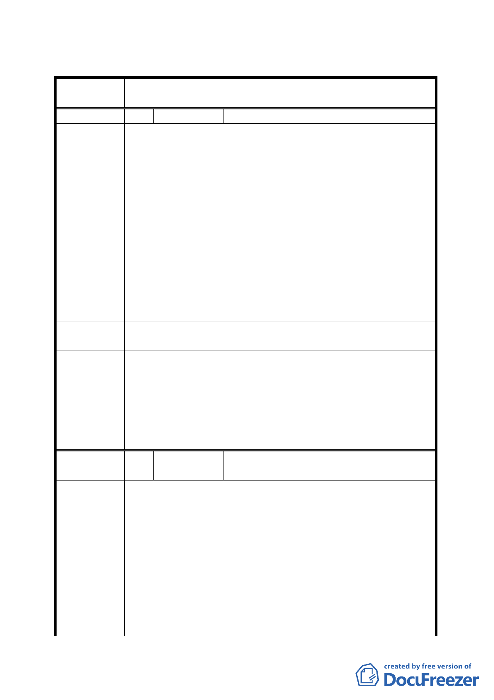

臺北市都市計畫委員會公民或團體所提意見綜理表
案
名
變更臺北市大安區復興段三小段 612-1 地號等 20 筆土地第
四種住宅區為第四種住宅區（特）細部計畫案
編 號 1 陳情人 唐憲（代理人尚詩懷）
主旨：為貴局規劃一～二樓為商業區，三樓為居家護理等公
共設施，修正為一～四樓為商業區，五樓為居家護理
等公共設施。
說明：
1. 原一樓地主因退縮人行道、車道減少一樓地主使用面積，
一部分地主不得不改選二樓以上之屋，再加上原本二樓住
陳情理由
戶，只有一二樓做商業區將不敷分配，減少一樓地主改建
意願。
2. 商業區價值較高，規劃只有一、二樓，減少樓層應用效益
。
3. 需居家護理者，都為身體欠安，五樓有福樓之諧音，令身
體欠安者心理較舒暢。
4. 一～四樓作商業區，五樓為公共設施，六樓以上為住宅，
住宅與商業區間隔公共設施樓層，六樓住戶比較安寧。
建議辦法
為貴局規劃一～二樓為商業區，三樓為居家護理等公共設
施，修正為一～四樓為商業區，五樓為居家護理等公共設施。
都市發展局
回應
本案更新空間配置係由實施者規劃設計，後續整體規劃未來
將依台北市都市設計及土地使用開發許可審議委員會審議結
果為準。
依都市更新處說明本案未申請「臺北市老舊中低層建築社區
委員會決議
辦理都市更新擴大協助專案計畫」前，其更新後開發總量已
達室內面積一坪換一坪，不符申請專案獎勵之檢核標準，本
案退回。
編
號2
陳情人
未具名(台北市大安區大安路一段 206 巷
8 號)
1. 違建戶拆遷補貼，建商、違建戶補貼，與非違建戶無關。
2. 地主更新前後產權資料規定必須列為合建契約附件。
3. 信託契約必須建商、地主、信託銀行共同簽訂，建商、地
主帳戶必須分開，不可有共同帳戶。
4. 完成屋找補，地主在原面積超過 5％以內以市價 90％購買
陳 情 理 由 ，超過 5％以上是為建商規劃欠周，無償補貼地主。若地
主選擇比原面積差距大者，5％以內以市價 90％購買，超
過部分以 95％購買。
5. 一樓車道設計太浪費一樓面積，結構非傳統直立承擔，請
政府測量支撐力之安全性。
6. 建商獎勵值比原本面積大，請確定是否不只一坪換一坪。
-6-